I'm a growth operator and builder in San Francisco. I've gone from building payments products at JPMorgan to selling at startups, automating GTM systems, and starting a variety of businesses along the way.
Ex JPMorgan · sold Teslas · sold saunas · walked to Santiago
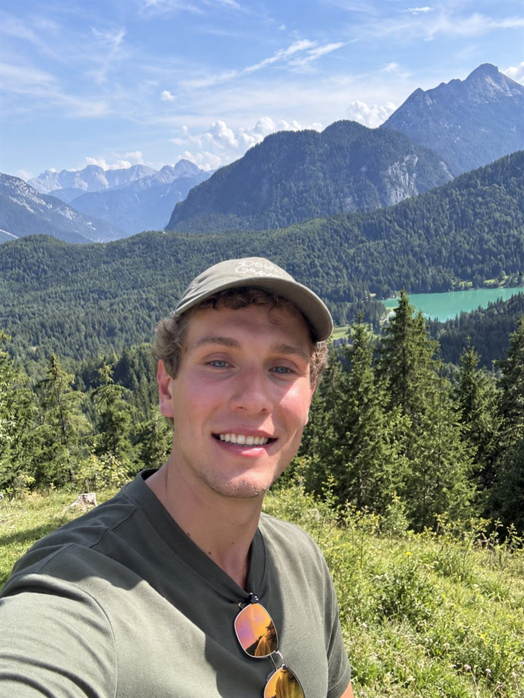
I started selling things on the internet as a teenager.
That turned into marketing, student leadership, private equity, product management at JPMorgan, and eventually startup growth and sales. Along the way I've built websites, sold Teslas, sold saunas, automated sales systems, walked across Spain, organized Baltic tech events, and started more side projects than I can reasonably justify.
How I tend to be useful
Distribution
I'm usually thinking about why something grows, the positioning, message, channel, loop, or sales motion that gets it in front of the right people.
People
I like bringing interesting people into the same room. I've done that through teams, communities, events, customers, and organizations for most of my life.
Product
I like turning messy problems into products and systems people actually want to use, from enterprise payments infrastructure to AI tools and side projects.
The work I enjoy most sits somewhere in the overlap: understand the customer, build the right thing, and figure out how to get people to care about it.
Selected work
Where I've worked
The side projects, detours, and sauna business are below.
Growth / Account Executive, Lighthouse
San Francisco · 2026
I joined an early stage immigration startup on the GTM side and ended up operating across growth, sales, and sales ops, building the machinery and selling through it myself.
Closed $718K across 64 deals in about four months, with a 44% win rate and a $256K peak month.
I also built 10 automated GTM workflows across n8n, Apollo, Perplexity, HubSpot, and Instantly, and led five engineers on an AI qualification system that cut manual lead review from roughly five minutes to seconds. Along the way, I landed accounts including Cursor and Thinking Machines Lab.
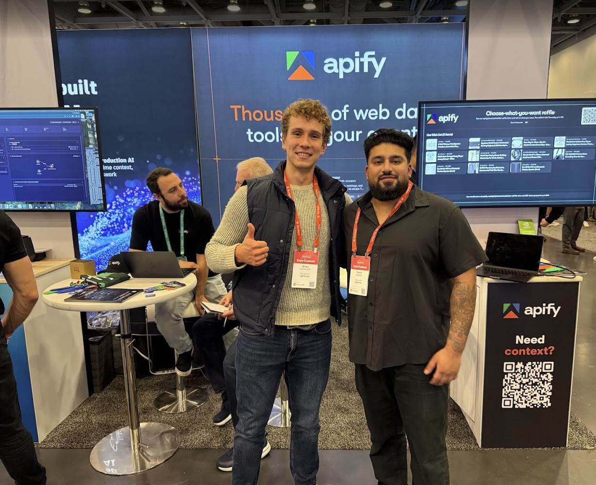
Industry conference, repping Lighthouse
Product Manager, Payments, JPMorgan Chase
San Francisco · 2023 – 2026
I spent three years learning how products get built inside one of the world's largest financial institutions, mostly around developer infrastructure, APIs, onboarding, and payments.
One of the systems I led helped reduce enterprise integration time from ~2 weeks to 3 days across 4,000+ clients. I also worked on onboarding infrastructure supporting 2,800+ partner ecosystems and analytics spanning 500M+ API events a month.
Along the way, I identified ~$1.5M in annual platform savings, led a pod of engineers and a designer, and helped secure $2M in continued investment after presenting the work to leadership.
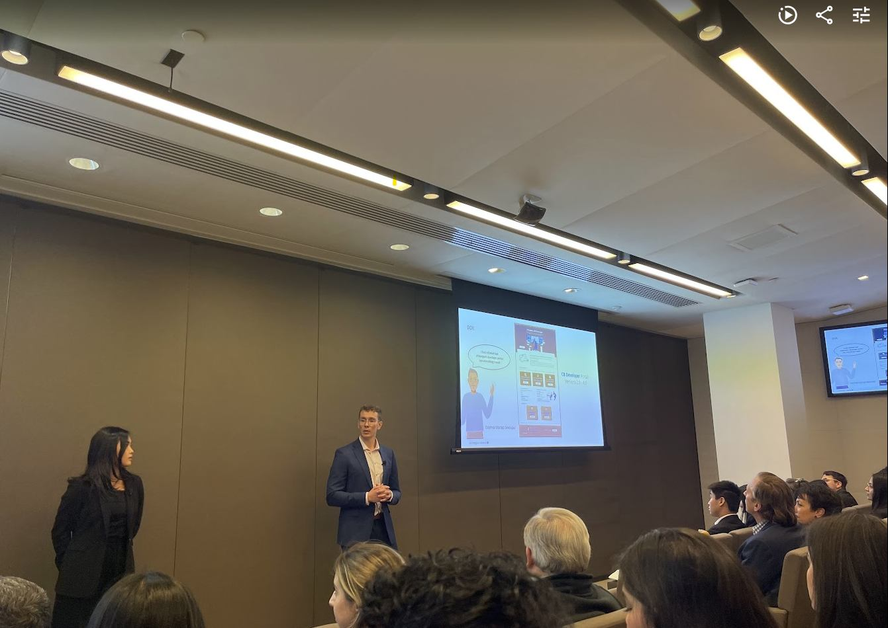
Presented output from a 3 month incubator project to senior leaders at JPMorgan, including the CPO
Sales Advisor, Tesla
Chicago · 2023
While still in college, I spent two months selling Teslas, mostly to see whether I'd actually enjoy sales.
Top 25% regionally. About $1.5M in product revenue. Turned out I liked it a lot.
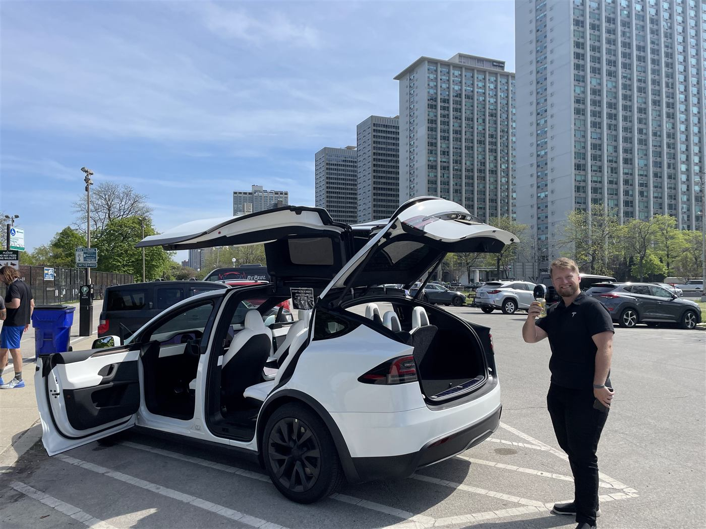
My colleague and I near Lake Michigan, trying to flag down test drives
Earlier chapters
Growth & Strategy / PE Analyst, Beckway Ventures· 2022–2023
Private equity research, market analysis, acquisition sourcing, and operator/investor content, Chicago and New York. This is also where I found the niche I later built EquiLaunch around.
Digital Strategist, Status Group· 2020–2021
My first real growth marketing job: paid social, landing pages, content, experiments, and client work across about six accounts.
Things I've built & tried
Some worked. Some didn't. All of them taught me something.
EquiLaunch
Website / digital agency · 2024–2025→
I kept coming across private equity firms and portfolio companies whose websites didn't match the quality of the businesses behind them, so I started an agency to fix that.
I handled acquisition, outbound, discovery, project scoping, positioning, website strategy, client relationships, and coordinating designers and developers through delivery. My PE background at Beckway informed the initial niche.
Leisure Premium
Luxury sauna ecommerce · 2023–2024→
I wondered whether I could sell a wooden box worth several thousand dollars over the internet, so I tried.
I learned manufacturer and dealer relationships, sourcing, Shopify, Google Ads, shipping, warranties, and high ticket ecommerce. I also pursued bulk commercial orders and worked directly with manufacturers.
My first real ecommerce business, a Shopify store for health and fitness products.
Facebook ads, product selection, copy, branding, fulfillment, analytics, landing pages, all taught myself. My 2020 résumé called me CEO. Technically true. There just weren't many employees.
The logbook
Smaller bets, rabbit holes, and things I'm still figuring out.
Telosys HealthPremium wellness commerce · 2026→
An ecommerce and education layer for premium recovery equipment, red light, hyperbaric, that category, with heavier emphasis on supplier diligence and regulatory considerations than a typical store.
Apartment SniperRental alert product · 2026→
Good apartments in competitive cities disappear fast. You define your criteria, it watches listings, scores matches, and alerts you before you have to keep refreshing. Prototyped the whole thing with AI dev tools.
AI Visibility / GEOCurrent exploration · 2026→
Researching how brands become visible inside answers from ChatGPT, Claude, Gemini, and Perplexity, citations, outside authority, entity signals, comparison content, digital PR, and measurement.
Life outside work
Adventures
Most problems feel smaller after a few hours on a bike.
Road cycling is one of my favorite ways to spend time outside, long rides, finding new routes, getting out of San Francisco, and the particular combination of endurance and head clearing that comes from being on a bike for a few hours.
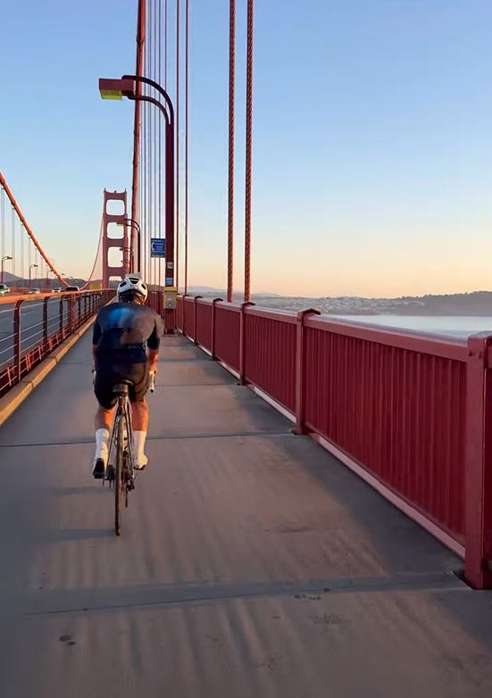
Road cycling, in motion
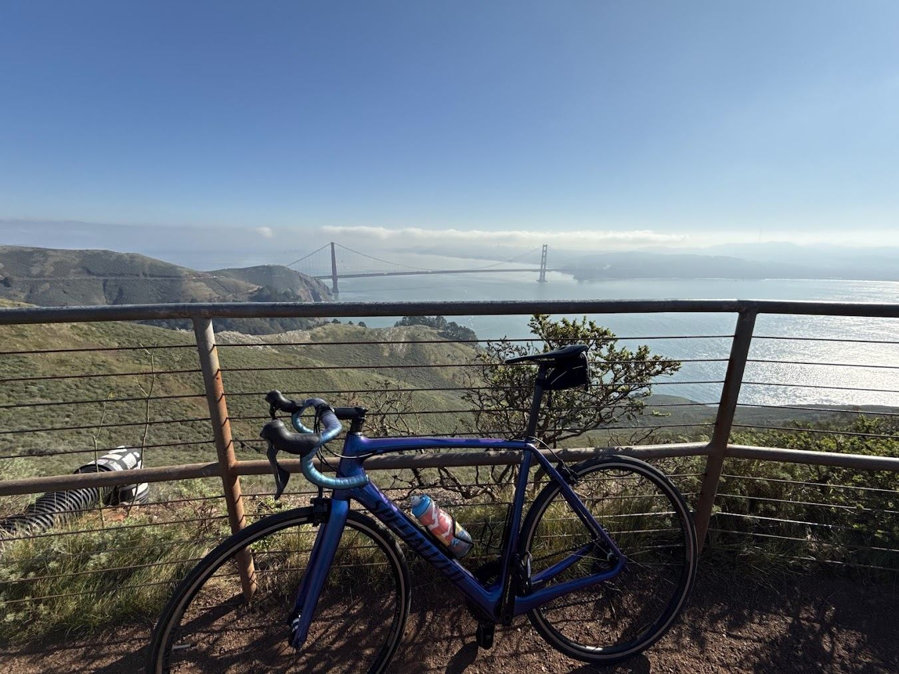
Scenic Bay Area ride
Walked 360 miles across Spain.
579.9 km · 360.3 mi · 23 days · Bilbao → Santiago
Lots of thinking. Lots of strangers becoming friends. Lots of blisters.
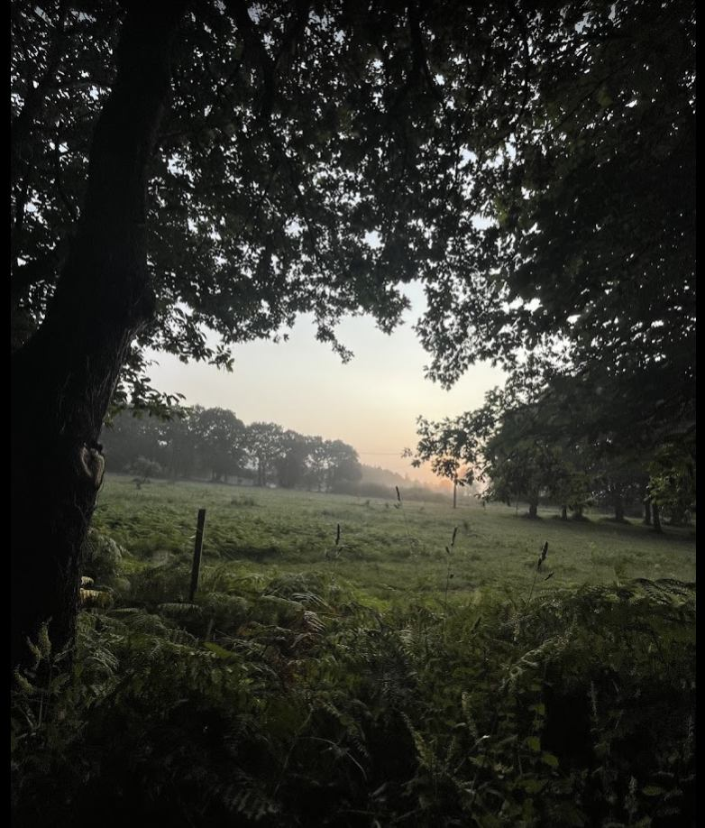
Somewhere in northern Spain
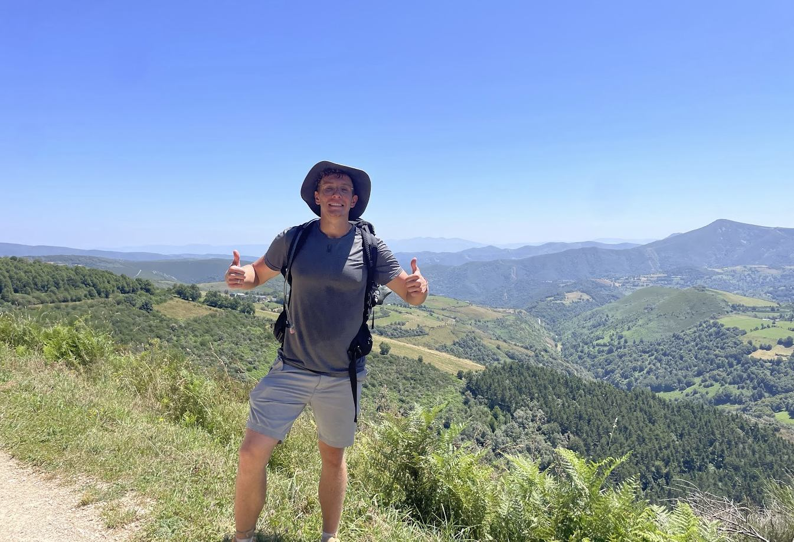
On the trail
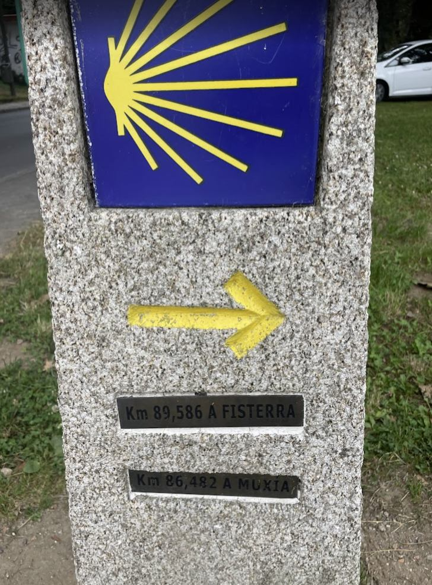
Santiago, day 23
Also, Mount Shasta.
Snow and altitude, mostly.
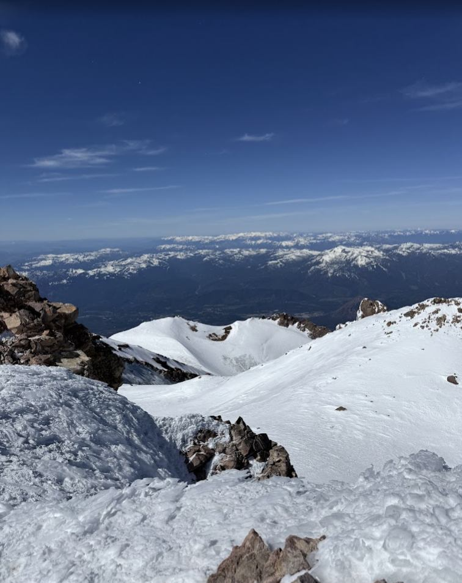
Near the summit
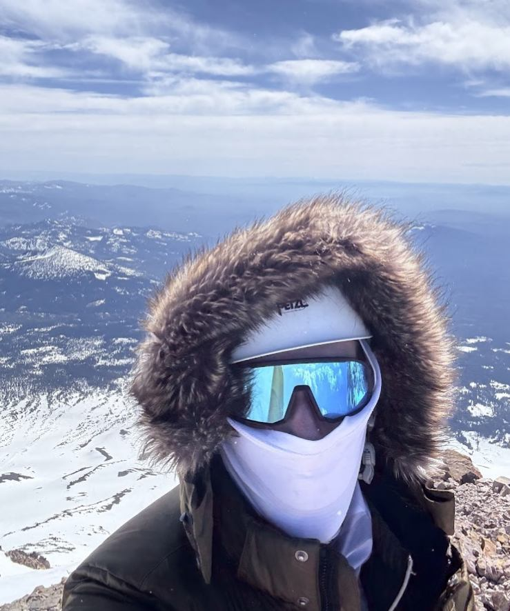
Same trip, considerably colder
Officiated my first wedding.
For close friends, in Chicago. A very different kind of public speaking than I'm used to.
A little Baltic in San Francisco.
I'm Lithuanian American and grew up around Chicago. In San Francisco, I've helped bring together Baltic founders, engineers, investors, and operators through community events, partly because I like tech, partly because I like Lithuania, and mostly because I like getting interesting people into the same room. I've organized about a dozen of these, including one during SF Tech Week that brought together nearly 100 people and even picked up some international press.
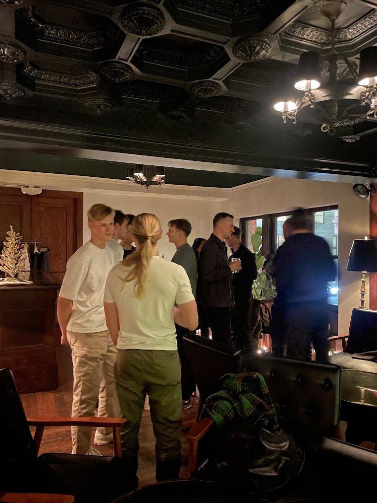
Baltic community event
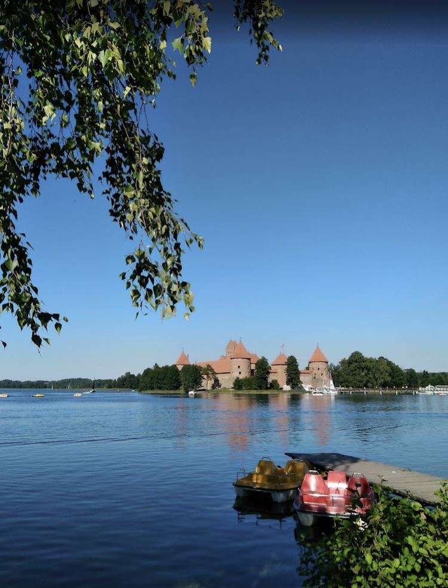
Trakai Island Castle, once a center of the Grand Duchy of Lithuania
Get in touch
Say hello.
I like meeting people building interesting things.